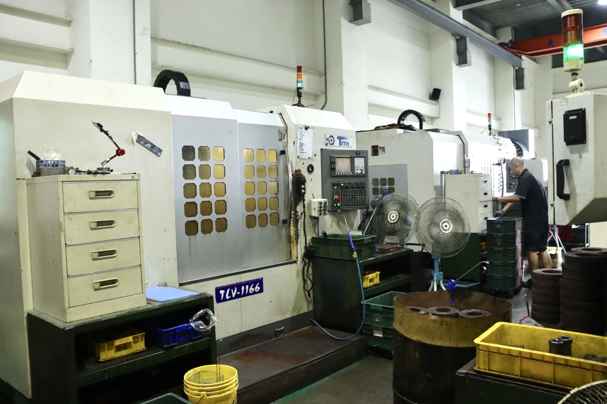
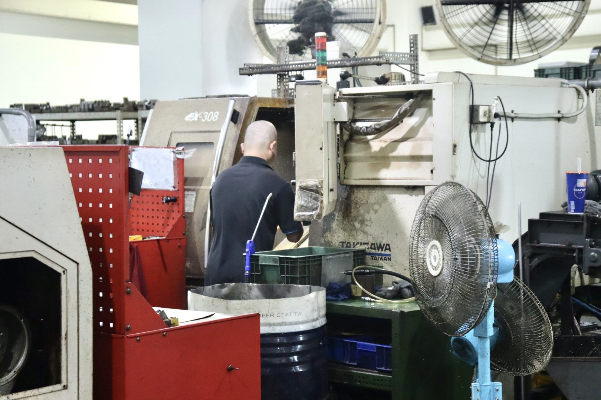
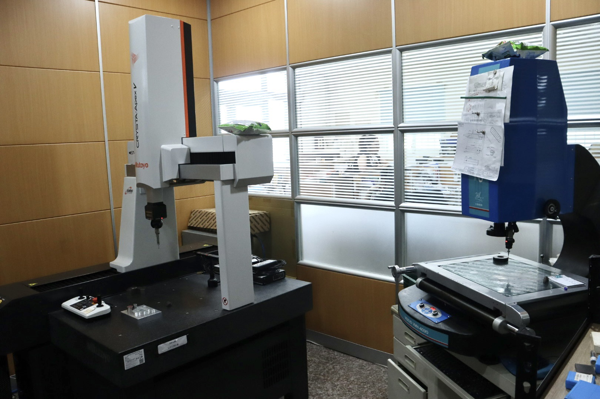
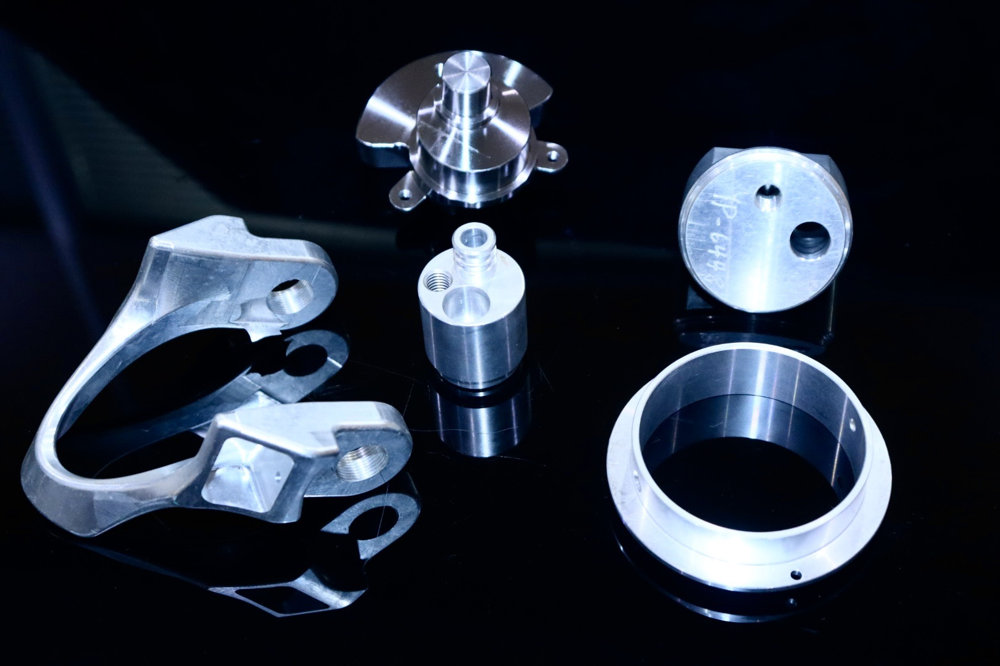
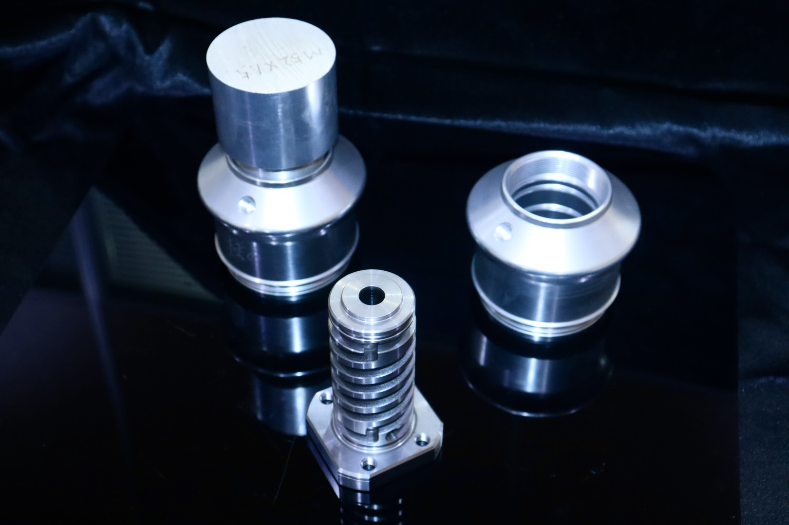
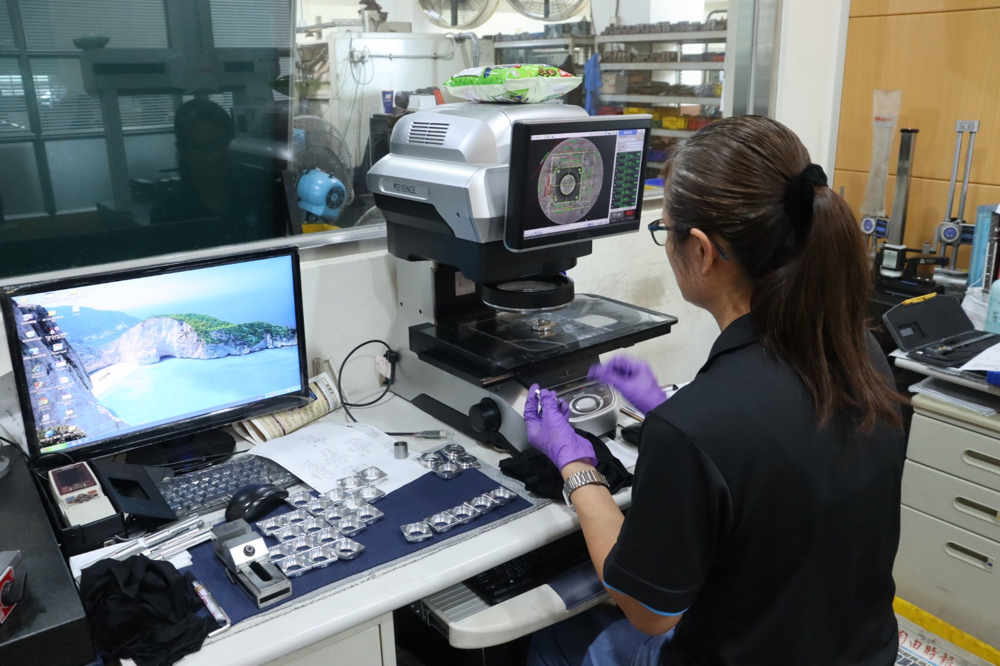
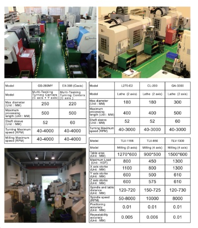

Precision parts for equipment builders, engineering teams, and overseas buyers.支援設備商、工程團隊與海外採購的精密零件需求。
We focus on high-mix, prototype and low-volume machining projects where communication, repeatability, delivery and inspection evidence matter.我們聚焦高混低量、打樣與小量加工專案，重視工程溝通、重複性、交期與量測證明。
From first prototype to repeat low-volume production.從第一次打樣到穩定小量量產。
If the project is still early, send the drawing anyway. We can review machining feasibility, tolerance risk, material choice and inspection requirements before quoting.即使專案還在早期，也可以先寄圖。我們可先協助評估加工可行性、公差風險、材質選擇與量測需求。
- Engineering samples
- Design verification parts
- Process feasibility review
- High-mix machining
- Repeat small batches
- Delivery coordination
- Shafts, sleeves, brackets
- Fixtures, jigs, frames
- Housings, plates, precision turned parts
Machines • Measurement • Finished parts機台 • 量測 • 成品
Real photos help buyers verify shop-floor capability, inspection environment, and product outcomes before sending drawings.實際照片協助客戶在寄圖前確認工廠能力、量測環境與成品成果。






What this means for buyers: turning, milling, C-axis, 4-axis, prototypes and low-volume builds.對採購來說：可支援車削、銑削、C 軸、四軸、打樣與小量量產。
Send drawings with material, quantity, critical tolerances and target delivery date. We can review feasibility and provide DFM feedback before production.請提供材質、數量、關鍵公差與期望交期，我們可在生產前評估可製造性並提供 DFM 回饋。

| Category | Model | Buyer Value |
|---|---|---|
| Multi-tasking Turning Center | GS-260MY / EX-308 | C-axis support • turning and milling operations • complex parts |
| Lathe | L270-E2 / CL-200 / GA-3300 | Precision turning for shafts, sleeves, round components and small batches |
| Milling | TLV-1166 / TLV-850 / TLV-1300 | 3-axis and 4-axis milling support for plates, brackets, fixtures and structures |
| Inspection | Mitutoyo CMM / Keyence | Critical dimension verification and measurement report support |
ISO 9001 quality control with measurable inspection evidence.ISO 9001 品質管理，搭配可被驗證的量測證據。
Our goal is simple: fewer surprises, stable delivery, and documented quality that buyers can review.我們的目標很直接：降低意外、交付穩定，並讓客戶看得到品質證明。
Send your drawing for review — trial orders and small-batch RFQs are welcome.寄圖給我們評估 — 歡迎試單與小批量詢價。
No project is too early to discuss. Send STEP, DWG or PDF files with material, quantity, tolerance highlights, application notes and target delivery date.專案初期也可以先討論。請提供 STEP、DWG 或 PDF 圖檔，並附上材質、數量、關鍵公差、用途與期望交期。
RFQ – [Part Name] – [Qty] – [Material]